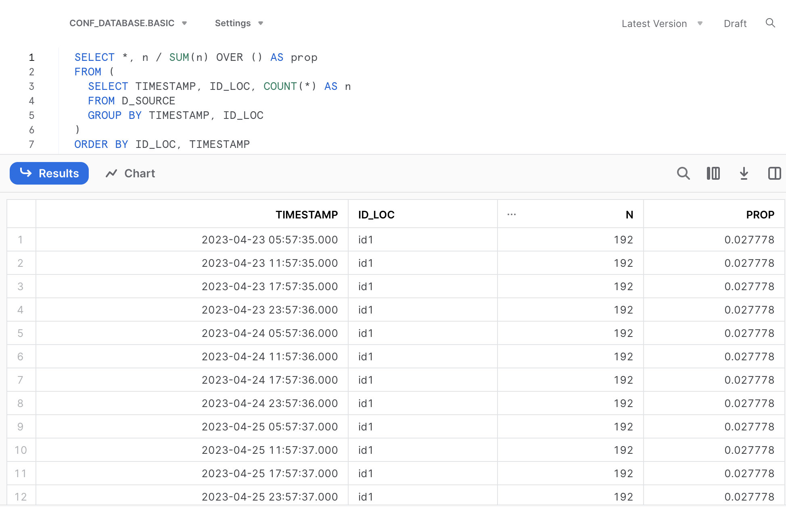
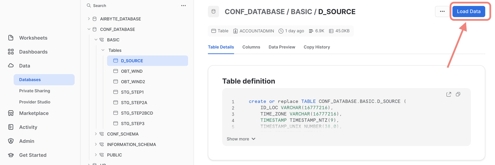
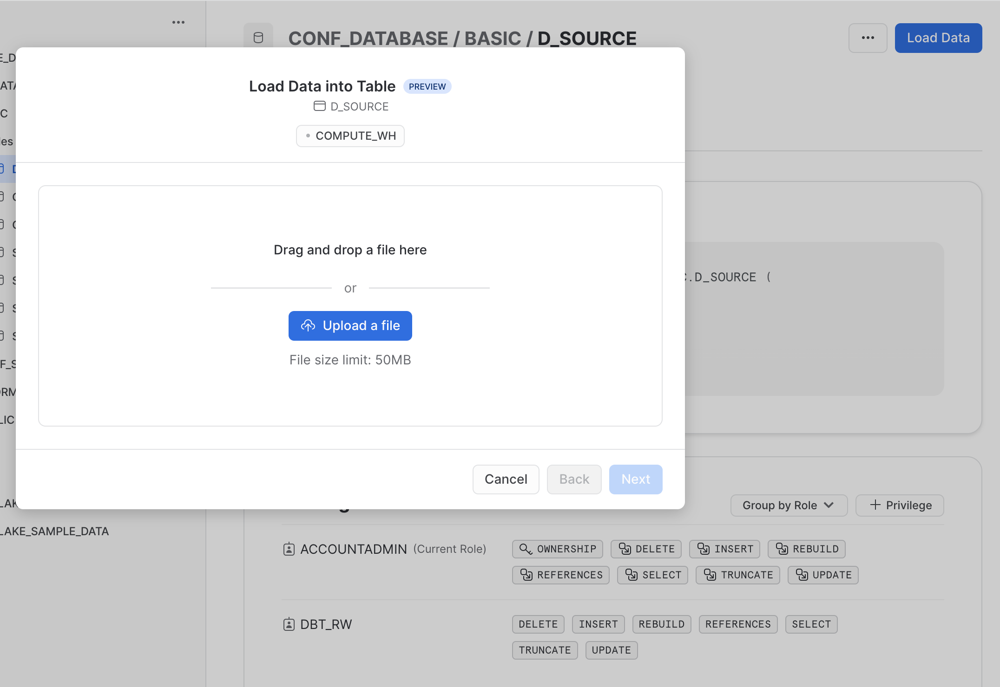
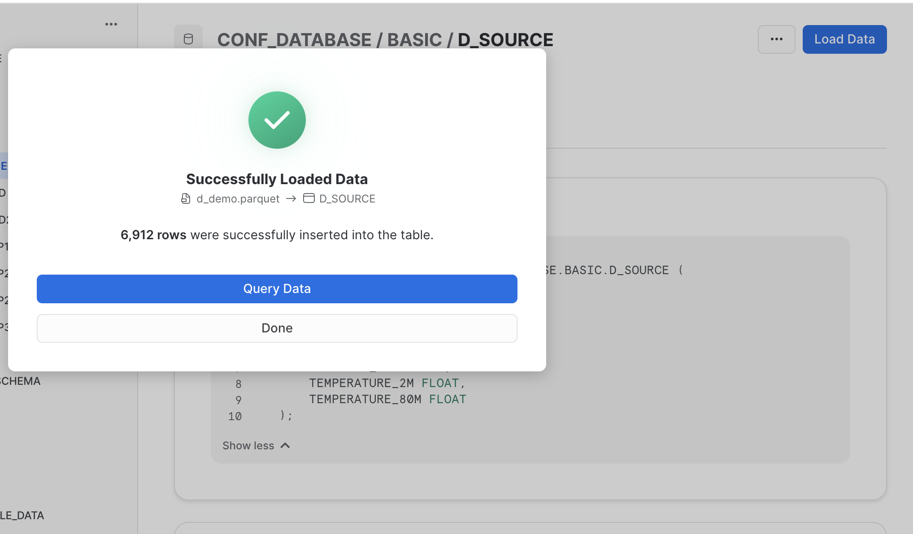

Summary
SQL coding is an important part of data engineering, but mastering it can be a difficult and lengthy process. However, existing knowledge from other programming languages like Python or R can help bridge the gap to SQL. This post describes the exemplary usage of a handy translation tool that enables users to generate SQL code based on familiar commands in R (by using two packages from the mighty tidyverse).
This post is in appreciation of Hengji from DBC for all the great SQL mentoring he has provided.
Introduction
SQL coding is essential for many data engineering applications or services, especially when working with modern data warehouses like Snowflake and Databricks, as well as for data modelling in dbt.
Clearly not everybody can be considered “native” in SQL and mastering it from scratch can be a daunting and time-consuming. Yet what if our existing knowledge could actually help us learn a new language?
Since many data professionals have already cultivated programming skills in languages like Python, R, Octave, Julia, etc. I was always wandering how the knowledge of one coding language might support the acquisition of another one.
One might be tempted to think that the knowledge of one programming language might make it harder to learn a different one. The variations in syntax, function names, data types, and so on can quickly lead to confusion and make the learning process more challenging.
However, what if we can use translations tools in order to make the switch to SQL easier and progressive? Using translation tools, we can start to learn in a step-by-step approach, making it easier not only to get started but also to go deeper into SQL.
In the current post I will showcase a powerful translation tool that generates SQL code based on R commands by using the R packages dplyr and dbplyr both from the popular tidyverse collection. The examples provided here below assume some background in R and data manipulation using dplyr (if you would like to get a head start, you could check out this helpful tutorial for dplyr which includes many illustrative code snippets).
Setup
The setup we need is nothing more than having a current R version and an IDE installed on your computer. I am using RStudio together with the R version 4.3.0 (actually, the IDE is optional). In addition, in case you want to test your SQL code that we will generate together, you should have a place to run your SQL code (e.g. by having a local Postgres database tool such as pgAdmin4 or a data warehouse in the cloud that allows SQL queries such as Snowflake). Thanks to DBC I have a trail version of Snowflake that I will use.
Demo Data
As our toy data we will use a subset of weather API requests that were collected in the course of a data engineering project. The data contain atmospheric pressure and temperature records for three seperate locations, each about 25 km apart from another.
Let’s load the demo data within R. To load the data in your R console we just need to read this linked CSV file (download and save it to the location of your choosing). Note that we also need to include several R packages using the command library(XXX) in our session first. In case you don’t have installed them in your system, you need to do this in advance - either within your IDE or using the console command install.packages("XXX"):
# Load Required Packages ####
library(readr) # reading files
library(lubridate) # dealing with date/time
library(dbplyr) # sql support
library(dplyr) # sql support
library(RSQLite) # sql support
# Load Demo Data ####
src_file = "./data/d_demo.csv"
d_source <- read_csv(src_file, col_names = TRUE, show_col_types = FALSE)
# Quick Data Overview
glimpse(d_source)
# Rows: 6,912
# Columns: 8
# $ ID_LOC <chr> "id2", "id2", "id2", "id2", "id2", "id2", …
# $ TIME_ZONE <chr> "GMT", "GMT", "GMT", "GMT", "GMT", "GMT", …
# $ TIMESTAMP <dttm> 2023-04-23 03:39:13, 2023-04-23 03:39:13, …
# $ TIMESTAMP_UNIX <dbl> 1.682221e+12, 1.682221e+12, 1.682221e+12, …
# $ TIME <dttm> 2023-04-22 00:00:00, 2023-04-22 04:00:00, …
# $ PRESSURE_MSL <dbl> 1015.4, 1014.2, 1015.6, 1015.6, 1015.4, …
# $ TEMPERATURE_2M <dbl> 18.9, 17.7, 22.3, 20.5, 15.7, 17.6, 23.7, …
# $ TEMPERATURE_80M <dbl> 18.6, 19.8, 19.5, 20.0, 19.8, 20.4, 21.2, …From the display of the sample information, there are around 6900 records listed across 8 columns. Additionally, there is a TIMESTAMP field that indicates when the API query was run, and an ID_LOC field displaying the location identifier for which weather details were obtained (three places in total: id1, id2, id3).
First SQL Translation
To get a better undertstanding of the data, let’s ask some questions regarding the scope of the demo data: How often was the API request run for each location and how many days are present in the TIMESTAMP column?
d_source %>%
count(TIMESTAMP, ID_LOC) %>%
mutate(prop = n/sum(n)) %>%
arrange(ID_LOC, TIMESTAMP) %>%
print(n=12) # restricting the output to the first 12 rows
# A tibble: 36 × 4
# TIMESTAMP ID_LOC n prop
# <dttm> <chr> <int> <dbl>
# 1 2023-04-23 05:57:35 id1 192 0.0278
# 2 2023-04-23 11:57:35 id1 192 0.0278
# 3 2023-04-23 17:57:35 id1 192 0.0278
# 4 2023-04-23 23:57:36 id1 192 0.0278
# 5 2023-04-24 05:57:36 id1 192 0.0278
# 6 2023-04-24 11:57:36 id1 192 0.0278
# 7 2023-04-24 17:57:36 id1 192 0.0278
# 8 2023-04-24 23:57:36 id1 192 0.0278
# 9 2023-04-25 05:57:37 id1 192 0.0278
# 10 2023-04-25 11:57:37 id1 192 0.0278
# 11 2023-04-25 17:57:37 id1 192 0.0278
# 12 2023-04-25 23:57:37 id1 192 0.0278
# # ℹ 24 more rowsThat is, the demo data contain 3 days of API requests, 4 requests per day for each location, making in total 3 x 4 x 3 = 36 individual timestamps (API requests).
How can we get this exact timestamp-based summary translated to a proper SQL command? That’s quite easy: we just need to add two additional commands to the basic R code shown before, memdb_frame() at the beginning and show_query() at the end:
memdb_frame(d_source) %>%
count(TIMESTAMP, ID_LOC) %>%
mutate(prop = n/sum(n)) %>%
arrange(ID_LOC, TIMESTAMP) %>%
show_query()
# <SQL>
# SELECT *, `n` / SUM(`n`) OVER () AS `prop`
# FROM (
# SELECT `TIMESTAMP`, `ID_LOC`, COUNT(*) AS `n`
# FROM `dbplyr_003`
# GROUP BY `TIMESTAMP`, `ID_LOC`
# )
# ORDER BY `ID_LOC`, `TIMESTAMP`We can utilize this SQL code in Snowflake, omitting the quotation marks. Remember to substitute the dataframe name with the actual table name, i.e. D_SOURCE.
SELECT *, n / SUM(n) OVER () AS prop
FROM (
SELECT TIMESTAMP, ID_LOC, COUNT(*) AS n
FROM D_SOURCE
GROUP BY TIMESTAMP, ID_LOC
)
ORDER BY ID_LOC, TIMESTAMP
Nice, right? We made our first translation into SQL. If you know SQL already a bit, you will know about Common Table Expressions (CTEs). We can rephrase the code from the translation by using a CTE (please click the callout box below, if you are interested).
In case you are interested why we need to apply memdb_frame() to our data frame containing our data: this function creates an actual table (instead of a data frame) in a temporary in-memory database (see the documentation for more details).
Second SQL Translation
Based on our timestamp-based summary seen before it seems that there is considerable redundancy in the demo data. Let’s only keep for each day the data from a single API call collected for each location (n=3), so that we end up with 3 x 3 = 9 individual TIMESTAMPS. Currently, we have 4 API calls per day, but we only want to keep the latest one for a given day.
How should we do that? By following these steps:
Creating a new column containing the day of a given timestamp (named TIMESTAMP_DAY)
Group the data based on two attributes: location and day of the timestamp (ID_LOC and TIMESTAMP_DAY)
Selecting the latest/highest (maximum) timestamp from the grouped data
The following R code can be used to implement and confirm the results of these operations (1 API call per location and day):
d_work1 <-
d_source %>%
mutate(TIMESTAMP_DAY = date(TIMESTAMP)) %>%
group_by(ID_LOC, TIMESTAMP_DAY) %>%
slice_max(TIMESTAMP, n=1) %>%
ungroup()
d_work1 %>%
count(TIMESTAMP, ID_LOC) %>%
mutate(prop = n/sum(n)) %>%
arrange(ID_LOC, TIMESTAMP)
# # A tibble: 9 × 4
# TIMESTAMP ID_LOC n prop
# <dttm> <chr> <int> <dbl>
# 1 2023-04-23 23:57:36 id1 192 0.111
# 2 2023-04-24 23:57:36 id1 192 0.111
# 3 2023-04-25 23:57:37 id1 192 0.111
# 4 2023-04-23 21:39:14 id2 192 0.111
# 5 2023-04-24 21:00:18 id2 192 0.111
# 6 2023-04-25 21:00:19 id2 192 0.111
# 7 2023-04-23 21:42:50 id3 192 0.111
# 8 2023-04-24 21:42:51 id3 192 0.111
# 9 2023-04-25 21:42:52 id3 192 0.111Again, let’s translate this R code of the data transformation into SQL by including memdb_frame() at the beginning and show_query() at the end of the code:
memdb_frame(d_source) %>%
mutate(TIMESTAMP_DAY = date(TIMESTAMP)) %>%
group_by(ID_LOC, TIMESTAMP_DAY) %>%
slice_max(TIMESTAMP, n=1) %>%
ungroup() %>%
show_query()
# <SQL>
# SELECT
# `ID_LOC`,
# `TIME_ZONE`,
# `TIMESTAMP`,
# `TIMESTAMP_UNIX`,
# `TIME`,
# `PRESSURE_MSL`,
# `TEMPERATURE_2M`,
# `TEMPERATURE_80M`,
# `TIMESTAMP_DAY`
# FROM (
# SELECT
# *,
# RANK() OVER (PARTITION BY `ID_LOC`, `TIMESTAMP_DAY` ORDER BY `TIMESTAMP` DESC) AS `q01`
# FROM (
# SELECT *, date(`TIMESTAMP`) AS `TIMESTAMP_DAY`
# FROM `dbplyr_004`
# )
# )
# WHERE (`q01` <= 1)We can utilize this SQL code again in Snowflake, after omitting the quotation marks.
SELECT
ID_LOC,
TIME_ZONE,
TIMESTAMP,
TIMESTAMP_UNIX,
TIME,
PRESSURE_MSL,
TEMPERATURE_2M,
TEMPERATURE_80M,
TIMESTAMP_DAY
FROM (
SELECT
*,
RANK() OVER (PARTITION BY ID_LOC, TIMESTAMP_DAY ORDER BY TIMESTAMP DESC) AS q01
FROM (
SELECT *, date(TIMESTAMP) AS TIMESTAMP_DAY
FROM D_SOURCE
)
)
WHERE (q01 <= 1)As you can see in the SQL code this time we find a so called window function in our translation. In general, a SQL window function applies aggregate and ranking operation over a particular data window (i.e. a set of rows). I am refering to the code part starting with RANK() and ending with the ORDER BY() statement. You can read a nice and concise summary on this topic following the link above (or here).
I am hoping that these two examples have been interesting enough to get you started on your own exploration and the illustrated translation tool may be a useful resource for your learning journey.
Happy coding & Cheers! 😃
In case you would like to replicate some of the SQL code directly in Snowflake, you would need to upload your local data file and make it available as a table. Please find the demo data as parquet file in the link (download the file and save it on your local machine).
Now, uploading this data file to Snowflake can be done in two simple steps:
- Create the destination table: this table is empty at the moment of creation, but for creating the table you need to define the data schema, i.e. column names and data types (see the details below).
- Within the Snowflake UI go to the database section and select a specific table, namely the one that was just created created: click on the “Load Data” button and select the previously dowloaded parquet-file containing the demo data.
Step 1
When creating the table in Snowflake we need to define the column definitions, i.e. providing a name for each column and the data type specification of each column. The column definitions are separated by commas. For our concrete example the destination table (named D_SOURCE) with its 8 columns is created in Snowflake as follows:
CREATE TABLE D_SOURCE(
ID_LOC VARCHAR,
TIME_ZONE VARCHAR,
TIMESTAMP TIMESTAMP_NTZ(9),
TIMESTAMP_UNIX NUMBER(38,0),
TIME TIMESTAMP_NTZ(9),
PRESSURE_MSL FLOAT,
TEMPERATURE_2M FLOAT,
TEMPERATURE_80M FLOAT
)Step 2
Within the Snowflake UI navigate to the database section and select the database and the schema that contains the previously created destination table (in our example: D_SOURCE). When you have selected this table, you will see blue action button on the top right corner named “Load Data” (see the screenshot below)
Next you are prompted to browse and select the local file that you want to upload. Find the previously downloaded file demo_file.parquet and click “Next”.

Finally, select the right file format “Parquet” and finish the upload process.

Your efforts should be reworded by the following “success” feedback. That is, you are good to go using the data uploaded into the destination table. 🙌
